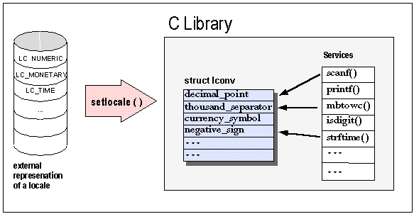

All the culture and language dependencies discussed in the previous section need to be represented in an operating system. This information is usually represented in a kind of language table, called a locale.
The X/Open consortium has standardized a variety of services for Native Language Support (NLS) in the programming language C. This standard is commonly known as XPG4. Internationalization services as well as localization support are included in X/Open's Native Language Support. The description below is based on this standard.
According to XPG4, the C locale is composed of several categories, which are given in Table 24.
| Category | Content |
LC_NUMERIC | Rules and symbols for numbers |
LC_TIME | Values for date and time information |
LC_MONETARY | Rules and symbols for monetary information |
LC_CTYPE | Character classification and case conversion |
LC_COLLATE | Collation sequence |
LC_MESSAGES | Formats and values of messages |
The external representation of a C locale is usually a file in UNIX. Other operating systems may use other representations. The external representation is transformed into an internal memory representation by calling the function setlocale(), as shown in Figure 4:

Inside a program, the C locale is represented by one or more global data structures. The C library provides a set of functions that use information from those global data structures to adapt their behavior to local conventions. Examples of these functions and the information they cover are listed in Table 25:
| C Locale Function | Information Covered |
setlocale(), ... | Locale initialization and language information |
isalpha(), isupper(), isdigit(), ... | Character classification |
strftime(), ... | Date and time functions |
strfmon() | Monetary functions |
printf(), scanf(), ... | Number parsing and formatting |
strcoll(), wcscoll(), ... | String collation |
mblen(), mbtowc(), wctomb(), ... | Multibyte functions |
catopen(), catgets(), catclose() | Message retrieval |